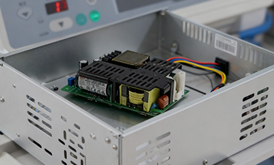
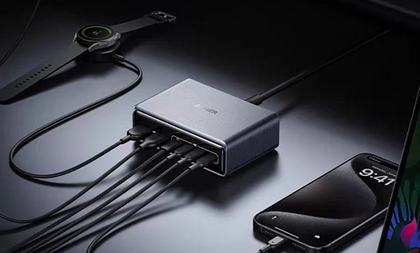
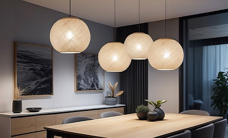
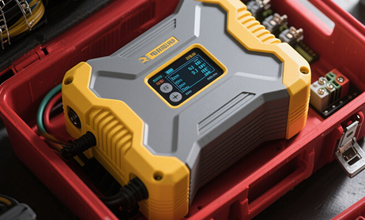
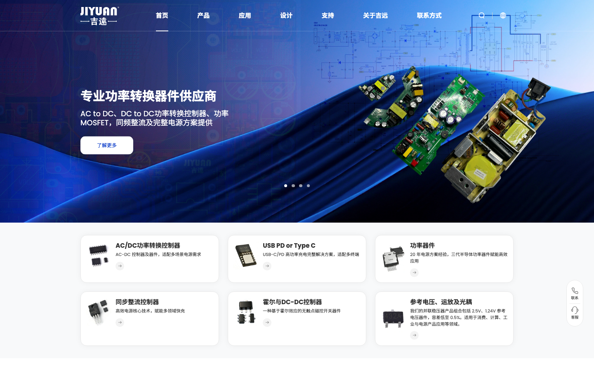
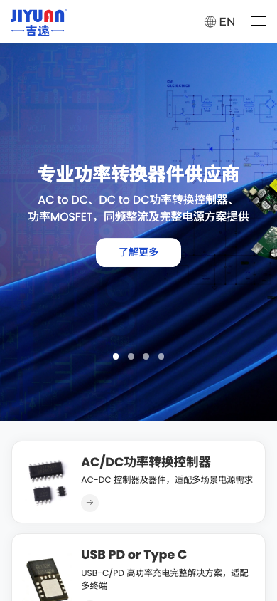

01 / SIGNAL FIRST
先把功率转换放进工作台
蓝色电路、样板和器件建立工程语境，让控制器不再是孤立的型号文字。
01 / READING MAP
原站将“产品、应用、设计、支持、关于”并列为主导航，再用 Hero、产品卡、应用卡、新闻与订购/设计/支持/加入四项行动承接浏览路径。它的优点不在于信息少，而在于把电源开发中不同阶段的入口摆在同一个体系内。
蓝色电路、样板和器件建立工程语境，让控制器不再是孤立的型号文字。
AC/DC、USB PD、功率器件、同步整流、霍尔/DC-DC、参考电压/运放/光耦。
PRODUCT FAMILIESAC/DC 电源、USB PD & Type C、LED 驱动、电机驱动。
APPLICATION ROUTES订购、设计、支持、加入四个行动卡把内容推向样品、设计与工程沟通。
RESPONSE PROMISE / VERIFY02 / PRODUCT ARCHITECTURE
原站产品模块通过卡片图像、短解释和真实详情路由，先帮助用户定位技术问题，再进入深层目录。案例页保留“家族—任务—详情”关系，并把每张卡写成可迁移的导航规则。
FAMILY 01 · CONVERT
AC-DC 控制器及器件，适配多场景电源需求。原站用一句结果导向说明降低了工程师进入长目录前的理解成本。
进入原站分类 ↗一级入口负责定义任务，二级页面再提供拓扑、参数、封装、选型和样品申请，不要把完整料号表塞进 Hero。
03 / APPLICATION MATRIX
应用区将电源器件放回 AC/DC 电源、快充、LED 与电机驱动等结果场景。它让不熟悉型号的访客可以从“我要做什么”反向找到产品组合。

从小功率 PSR 到更高功率段，用输出等级组织方案选择。
↗
用终端兼容与高功率充电结果承接控制器与器件。
↗
让功率器件的价值落在稳定、节能、可量产的照明系统。
↗
把控制、效率和负载动作组合成工程师可理解的应用入口。
↗当目录深、访客角色多时，同时提供“按产品找”和“按应用找”两条路径；两条路径最终汇入同一详情、选型或样品动作。
04 / DESIGN SUPPORT
原站不是把技术文章藏在页脚，而是把订购、设计、支持、加入四项行动卡放在最新资讯之后。对于电源器件，样品、参考设计、应用课堂与工程师沟通是成交路径的一部分。
把询盘、选型、样品、设计和售后各自变成真实入口；不要只写“联系我们”而不说明下一步会发生什么。
05 / NEWS RHYTHM
最新资讯模块把企业动态、行业活动和站点更新压缩成带日期的列表。它不抢产品主叙事，却给长期访问者一个判断“这家公司是否持续工作”的信号。
06 / EVIDENCE CHECK
官网公开内容给出了“20 年方案经验、三代半导体器件、工程师 24 小时内回复、苏州/深圳双据点”等信号。案例页把它们拆成待验证条目，而不是直接复制成新项目的宣传数字。
07 / RESPONSIVE AUDIT
原站桌面端使用深蓝透明 Header、4 张 Hero、六张产品卡和右侧联系/客服浮层；移动端切换为白色 Header、EN 与汉堡菜单，Hero 与产品卡自然收窄。案例页保留原站截图，并把缩放、键盘和订阅表单状态列为重构项。


KEEP
REFINE
08 / AI INSTRUCTIONS
以下规则适用于功率器件、电子元件、工业芯片和其他“型号深、应用广、支持重”的 B2B 官网。复制信息架构与证据逻辑，不复制吉远的企业事实和素材。
一级导航回答“这是哪种电源任务”，详情页再展开封装、电气参数、拓扑、选型与样品。
允许工程师从型号找方案，也允许采购者从 AC/DC、快充、LED、电机结果反向进入器件。
样品、参考设计、应用课堂和工程师回复要说明提交什么、多久回复、会获得什么，而不是泛化的“联系我们”。
经验年限、器件代际、回复时效、服务据点都要标注日期、范围、工作时段和可核验来源。
Hero 视频、Swiper、hover 和移动菜单必须提供静态图片、原生链接、键盘焦点和 reduced-motion 退路。
09 / SOURCE ARCHIVE
本案例保留吉远中文首页、主 CSS/媒体查询、Swiper/WOW/GSAP/SplitType 依赖、4 张 Hero、6 类产品、4 个应用、服务图标、视频与桌面/手机截图。完整映射和清理边界见 manifest.md。